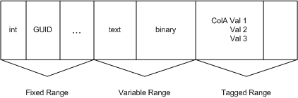

Applies to: Windows | Windows Server
Tagged, fixed, and variable-length columns are the primary column types supported by ESE. Tagged columns are not present in a record unless data is stored in the column, and may be fixed or variable length. Tagged columns can also contain more than one value in a single record. Fixed columns take the same amount of space in every row, and require 1 bit to represent the NULL value. Variable length columns require 2 bytes to represent the size and NULL value, and occupy a variable amount of space in each record. For more information on the tagged and fixed columns, see the Jet_bitColumnTagged, and Jet_bitColumnFixed option in the grbit member of JET_COLUMNDEF structure used in the call to JetAddColumn.
Variable-length columns are determined by the column type that is set in the coltyp parameter in the call to JetAddColumn. The following column types may be fixed or variable length depending on whether the Jet_bitColumnFixed option is set:
JET_coltypBinary
JET_coltypText
JET_coltypLongBinary
JET_coltypLongText
In general, data in the record is stored with the fixed range first, the variable range next, and the tagged range stored last. The following diagram shows how the records are stored in the table. As shown in the diagram, the tagged range may contain columns with multiple values.
